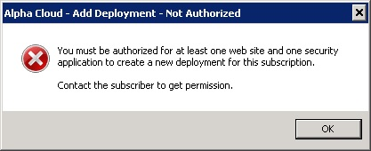
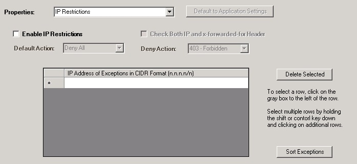
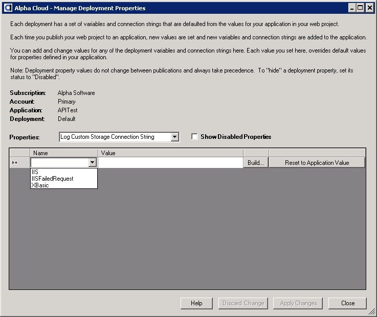

Click the button entitled "Add Deployment" on the right side of the dialog.
The dialog below will be displayed.

About Deployments and Schedules
Deployment Header Properties
Deployment Schedule Properties
Adding a New Deployment
Viewing and Updating Deployments
Managing Deployment Properties
A Deployment is the cloud resource you manage to actually put your published web project to work on the web. You can create one or more deployments for an application. Each deployment has a unique web site and a virtual path that is different from all other deployments on the internet.
Each deployment has a single header that defines elements of a deployment that are not likely to change over time. This includes the primary contact, the web site, application path, and options for storing users and groups when deployed.
The Deployment Schedule is a set of items that each have a unique and non-overlapping available start and stop datetime. Each item in the schedule represents the intended deployment options during that specific time range. As a result, you can "schedule" your application to be deployed with a specific version of the application and a specific build of Alpha Anywhere Application Server for IIS at one time, and then "schedule" a different version of your application or build of Alpha Anywhere Application Server for IIS at another time. Using this mechanism, you can roll application versions and server builds forward or backward as necessary. Scheduling a deployment is all that is required to make the change.
Note: When you use the basic publish settings dialog or check the box labeled "Deploy immediately when published?" in the advanced publish settings dialog, each time your web project is published to your Alpha Cloud application, it will then be deployed immediately. A schedule item is automatically created for you in this case. You can see the scheduled deployment when you visit the "Manage Deployments" dialog discussed below.
Users and groups stored in the Alpha Cloud security database are grouped by security application.
The default name for deployment security combines the account, the application and the deployment name into a unique key. This isolates each deployment from any others in your subscription. At deployment time, Alpha Cloud further isolates your security applications from those of other subscriptions.
Security applications are maintained at the subscription level. You can create your own security applications and use them for one or more deployments. Important: Sharing a security application across deployments will cause them to share session state and login information. It is important that you understand the implications of doing this.
Note: Sharing security applications across subscriptions is not supported on Alpha Cloud.
In the most common case, you will access web pages and resources using a URL that has a single "/" after the host name (such as https://www.mydomain.com/index.a5w"). The default path is "/". You can deploy multiple applications to a web site by providing each application with a unique path that is different from any other on that site.
For example, if you create a deployment with the path "/", you can create another with the path "/Accounting". The "/Accounting" application deployment will be accessed on the same web site using a URL such as "https://www.mydomain.com/Accounting/index.a5w".
To delete a deployment, click the button labeled 'Delete This Deployment'.
Note: You cannot undo this operation! Deleting a deployment permanently archives it. If the deployment has been scheduled, it will be terminated and removed from the active web site. You will still see usage reports for deleted deployments.
The build number of Alpha Anywhere Application Server for IIS that you want to run your deployed application with. You can also choose the current released build and the current pre-release build number from dialog lists by name. The number will be substituted for you at the time you set it.
Note: Alpha Cloud does not automatically change the build for your deployed applications. It is important that you thoroughly test each new build with your application before using it in production.
Tip: You can create a deployment with a different path to test new builds of Alpha Anywhere before deploying them to a production site. Maintaining a test site is a good idea for your own development as well, and Alpha Cloud makes it easy to set one up.
The default is Preserve; which will only publish users and groups if the selected security application on the deployment has no users and groups in it at the time the deployment is pushed to the Alpha Cloud. Options for publishing users and groups are:
The options for logging level include:
Once you have published an application to the Alpha Cloud, it can be deployed. The deployment header must be created in order to schedule deployment of your application to a web site.
Click the button entitled "Add Deployment" on the right side of the dialog.
The dialog below will be displayed.
Note: If you do not have permission to access at least one web site and at least one security application,
you will not be allowed to add a deployment (as both are required to define a deployment).
If this is the case, the following dialog will be displayed.
Contact the subscriber to be authorized to perform this operation.

To view and update existing deployments:
Use the drop down above the list entitled "Schedule" to select the filter you want to apply to schedule items.
You can choose from:
When you have finished making changes, click "Apply Changes" to update Alpha Cloud.
Notes:

Note: All valid web paths are displayed near the middle of the dialog for the selected deployment. You can copy any of the paths to the clipboard and paste them into a browser to access your deployed applications.
Web projects you create in the Alpha Anywhere development environment generally include one or more connection strings for ADO, Alpha DAO, or Storage. The connection strings you define in the Alpha Anywhere development environment are automatically published to Alpha Cloud along with your web project. After your application is published, you can view and edit connection strings and add constants you would like to be available to your running application.
Important Note: Connection strings are set in the Alpha Anywhere publish profile. These connection string values will always replace existing values in Alpha Cloud each time you republish your application.
You can override constants and connection strings for each deployment of your application. Those overrides will take precedence when your application is deployed.
Managing Application Constants
Managing ADO Connection Strings
Managing Alpha DAO Connection Strings
Managing IP Restrictions
Managing Storage Connection Strings
Managing Log Custom Storage
Open the Manage Deployments Dialog as discussed above in Viewing and Updating Deployments.
Select the deployment you want to manage properties for.
Click on the button labeled "Other Deployment Properties".
The Manage Deployment Properties dialog will display.

Select "Application Constant" from the properties drop down.
To add a new constant:
Click the name field of the new row (the row that has a * to the left) and select the name you want to override from the list of application values.
Tab into or click the value field of the same row and enter the value you want to set.
To edit an existing value:
Click the value field of the same row and enter the value you want to set.
Note: Constants can not be deleted, but can be disabled. Check the Show Disabled Properties check box to show the status column and update properties to "Active" or "Disabled".
When you have finished making changes, click "Apply Changes" to update the cloud.
To undo your changes instead of saving them, click "Discard Changes" to reset the data.
Open the Manage Deployments Dialog as discussed above in Viewing and Updating Deployments.
Select the deployment you want to manage properties for.
Click on the button labeled "Other Deployment Properties".
The Manage Deployment Properties dialog will display.

Select "ADO Connection String" from the properties drop down.
To add a connection string:
Click the name field of the new row (the row that has a * to the left) and select the name you want to override from the list of application values.
Tab into or click the value field of the same row and enter the value you want to set.
To edit an existing value:
Click the value field of the same row and enter the value you want to set.
Note: Connection strings can not be deleted, but can be disabled. Check the Show Disabled Properties check box to show the status column and update properties to "Active" or "Disabled".
You can also click the button in the row labeled "Build..." to open the ADO connection string dialog.

When you have finished making changes, click "Apply Changes" to update the cloud.
To undo your changes instead of saving them, click "Discard Changes" to reset the data.
Note: Alpha DAO connection strings are generally referenced by a unique name within the application and components. This name acts as a placeholder for the actual connection string. By using a name for a connection string, it is possible to change the value by overriding the named connection string value at publication time or in a deployment definition. The same named connection may have one value in Alpha Anywhere, but reference a different value in the publish profile. Each time you publish, the value set in your publish profile replaces the default connection string value set for the Application on Alpha Cloud for each name.
Alpha Cloud also allows you to override the connection string value for each deployment of your published application. Deployment level overrides for named connection strings persist regardless of what value is subsequently published at the Application level.
Open the Manage Deployments Dialog as discussed above in Viewing and Updating Deployments.
Select the deployment you want to manage properties for.
Click on the button labeled "Alpha DAO Connections".
The Manage Deployment Properties dialog will display.

The option entitled "Alpha DAO Connection String" will be selected in the properties drop down.
To add a connection string:
Click the name field of the new row (the row that has a * to the left) and select the name you want to override from the list of application values.
Tab into or click the value field of the same row and enter the value you want to set.
To edit an existing value:
Click the value field of the same row and enter the value you want to set.
Note: Connection strings can not be deleted, but can be disabled. Check the Show Disabled Properties check box to show the status column and update properties to "Active" or "Disabled".
You can also click the button in the row labeled "Build..." to open the Alpha DAO connection string dialog.

When you have finished making changes, click "Apply Changes" to update the cloud.
To undo your changes instead of saving them, click "Discard Changes" to reset the data.
By default, your application will allow access from any source IP address. You can set IP restrictions for an application or deployment to either allow specific IP addresses or to deny specific IP addresses from accessing your web site.
Setting restrictions at the deployment level overrides any settings made at the application level, so each deployment can have its own restrictions.
IP addresses are specified for version 4 (IPV4) addresses. IPV6 is not yet supported. An IP version 4 address is made up of four separate numbers from 0 to 255 and separated by periods. For example, 192.168.0.1 is an address that is often used by local networks.
Restrictions are specified using the CIDR (Classless Inter-Domain Routing) format. The CIDR format combines an IPV4 address, followed by a forward slash (/) and then adds a number that determines how many of the numbers (beginning at the left) are significant. Since each number ranges from 0 to 255, each of the four numbers will be stored as an eight bit binary number. The total length of an IPV4 address is thirty-two bits.
For example:
Note: The bit length value 0 is used with the address 0.0.0.0 (as in 0.0.0.0/0) to mean "all addresses". That value is not particularly useful for IP restrictions as preventing all addresses does not make your site very useful and allowing all addresses is the default behavior anyway.
To edit IP restrictions for your deployment:
Open the Manage Deployments Dialog as discussed above in Viewing and Updating Deployments.
Select the deployment you want to manage properties for.
Click on the button labeled "Other Deployment Properties".
The Manage Deployment Properties dialog will display.
Select "IP Restrictions" from the properties drop-down.
The "IP Restrictions" panel will be displayed.
If you want to remove exceptions from the deployment and default to application settings click the button labeled "Default to Application Settings".
To add or change restrictions click the "Enable IP Restrictions" checkbox to enable or disable IP specific access.
Select the default behavior (allow or deny all addresses).
Choose whether you want to check both the source IP from the incoming connection and the x-forwarded-for header in determining whether to allow or deny access.
Select the action to take when access is denied. Your options are:
Add IP addresses (in CIDR format) that are exceptions to the default behavior (allow or deny).
When you have finished making changes, click "Apply Changes" to update the cloud.
To undo your changes instead of saving them, click "Discard Changes" to reset the data.
Open the Manage Deployments Dialog as discussed above in Viewing and Updating Deployments.
Select the deployment you want to manage properties for.
Click on the button labeled "Storage Connections".
The Manage Deployment Properties dialog will display.

The "Storage Connection String" option will be selected in the properties drop down.
To add a connection string:
Click the name field of the new row (the row that has a * to the left) and select the name you want to override from the list of application values.
Tab into or click the value field of the same row and enter the value you want to set.
To edit an existing value:
Click the value field of the same row and enter the value you want to set.
Note: Connection strings can not be deleted, but can be disabled. Check the Show Disabled Properties check box to show the status column and update properties to "Active" or "Disabled".
You can also click the button in the row labeled "Build..." to open the storage connection string dialog.

When you have finished making changes, click "Apply Changes" to update the cloud.
To undo your changes instead of saving them, click "Discard Changes" to reset the data.
Alpha Cloud encrypts and copies log files from running servers to private storage so you can retrieve them from within Alpha Anywhere even when the instances have shut down.
You can request that the log files also be copied to your own cloud storage (currently S3 or Azure) as well. This is useful if you have a log analysis tool that is capable of pulling in files automatically and running analytics against them.
Note: Alpha Cloud copies partially complete log files to private storage so you have access to them in Alpha Anywhere sooner. Because some log analyzers require a complete file, log files are not copied to custom log storage until they are complete. As a result you will see a delay in logs moving to log custom storage.
Open the Manage Deployments Dialog as discussed above in Viewing and Updating Deployments.
Select the deployment you want to manage properties for.
Click on the button labeled "Other Deployment Properties".
The Manage Deployment Properties dialog will display.
Select "Log Custom Storage Connection String" from the properties drop down.
To override or add a connection string:
Click the name field of the new row (the row that has a * to the left) and select one of the following.
Tab into or click the value field of the same row and enter a connection string for the log custom storage.
To edit an existing value:
Click the value field of the same row and enter or build the value you want to set.
You can also click the button in the row labeled "Build..." to open the storage connection string dialog.
When you have finished making changes, click "Apply Changes" to update the cloud.
To undo your changes instead of saving them, click "Discard Changes" to reset the data.
{kind=link}